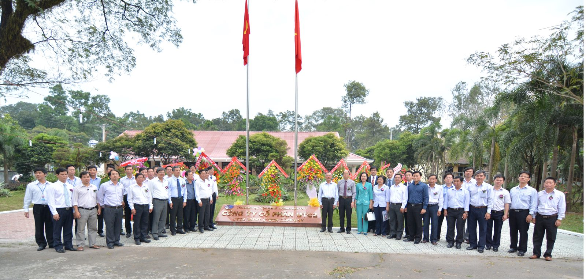
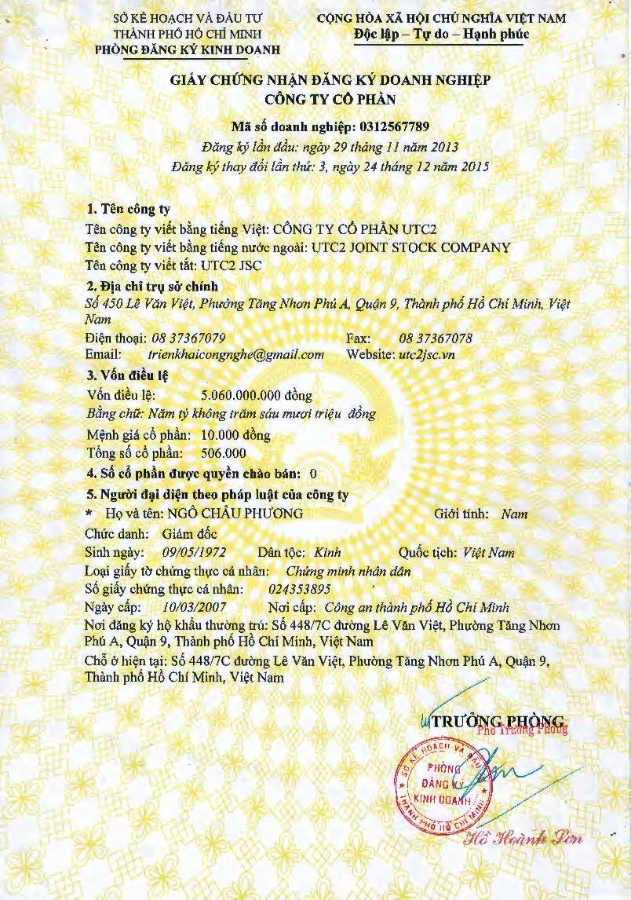
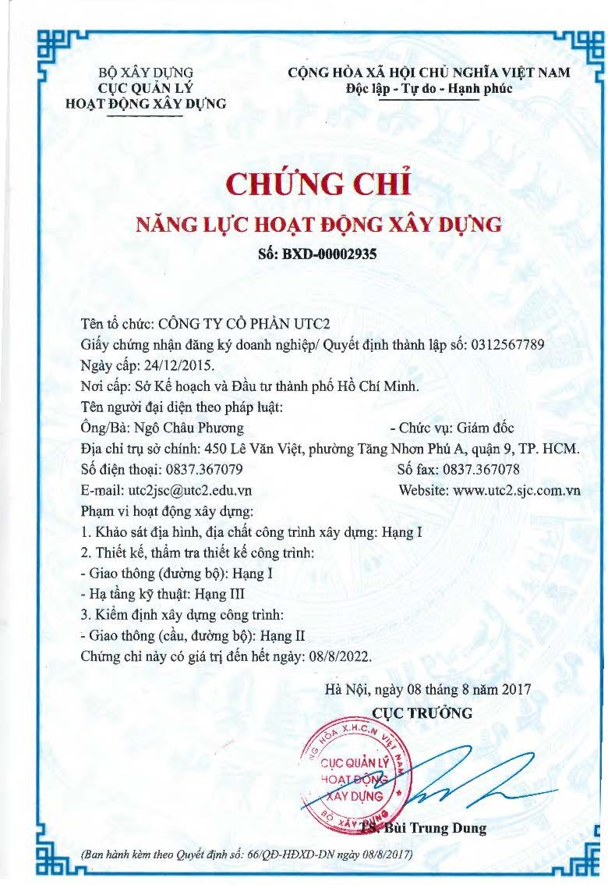
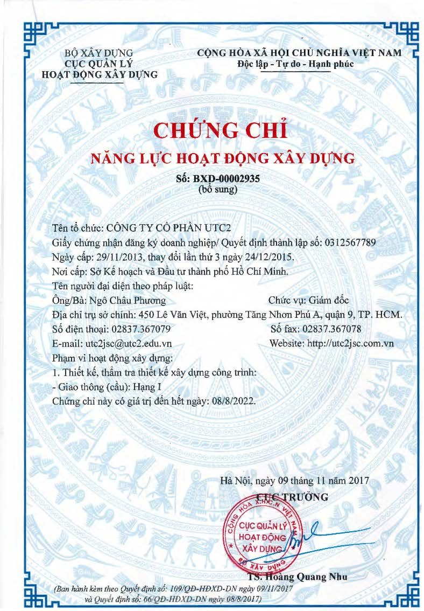

Công ty Cổ phần UTC2 tại Tp. Hồ Chí Minh đã được Trường Đại học GTVT đề xuất Bộ GD&ĐT cho phép thành lập trên cơ sở kế thừa năng lực của một số đơn vị khoa học công nghệ và lao động sản xuất tại Cơ sở II của Trường, với ba cổ đông ban đầu là Trường ĐH GTVT và hai cá nhân đại diện cho Công đoàn trường; Công ty được Sở KH&ĐT cấp Giấy chứng nhận ĐKKD vào ngày 29/11/2013 (mã số doanh nghiệp 0312567789) và chính thức khai trương vào ngày 10/01/2014.
Tháng 6/2014, Công ty đã thành lập phòng Thí nghiệm Kiểm định trọng điểm đường bộ, môi trường và an toàn giao (LAS-XD 1398): Quy mô trên 260 phép thử trong phòng và hiện trường cho 26 nhóm loại đất, đá, vật liệu xây dựng, kế cấu công trình,… thuộc lĩnh vực xây dựng công trình giao thông, môi trường, an toàn giao thông,… Đặc biệt, với các thiết bị, máy móc hiện đại nhất ở khu vực phía Nam (từ các nước Mỹ, Châu Âu,…) Phòng có kinh nghiệm thực hiện các phép thử: thí nghiệm, kiểm định trên 12 chỉ tiêu cơ lý của nhựa đường, thí nghiệm vệt hằn lún bánh xe; kiểm định độ bằng phẳng mặt đường theo chỉ số độ gồ ghề quốc tế IRI; kiểm định, thử tải cầu; quan trắc biến dạng, lún công trình; quan trắc đánh giá tác động môi trường,…

1. Thông tin khái quát
- Tên giao dịch: CÔNG TY CỔ PHẦN UTC2 .
- Địa chỉ trụ sở chính là: số 450 Lê Văn Việt, Phường Tăng Nhơn Phú, Tp. Hồ Chí Minh.
- Điện thoại: 028 3736 7079 Fax: 028 3736 7078
- Website: http://utc2jsc.com.vn Email: utc2jsc@utc2.edu.vn
- Giấy chứng nhận đăng ký doanh nghiệp số 0312567789 do Sở Kế hoạch Đầu tư Tp. Hồ Chí Minh cấp lần đầu ngày 29/11/2013 và đã thay đổi lần thứ 4 ngày 01/3/2021.
- Vốn điều lệ ban đầu là 3.060.000.000 đồng. Đến ngày 07/01/2015, Đại hội đồng cổ đông Công ty thống nhất tăng vốn điều lệ lên là 5.060.000.000 đồng (trong đó: Nhà trường cổ đông chính chiếm tỷ lệ 98,8% vốn điều lệ).Tư vấn xây dựng các công trình xây dựng cơ bản về giao thông vận tải, xây dựng dân dụng và các ngành nghề có liên quan.
Chứng chỉ phòng thí nghiệm: Las – XD 1398 (Quyết định số 798/GCN-BXD ngày 25/6/2019).
Công ty hoạt động trong các lĩnh vực sau:
+ Khảo sát địa chất công trình xây dựng.
+ Khảo sát địa hình.
+ Giám sát công tác xây dựng Công trình Dân dụng – Công nghiệp.
+ Giám sát công tác xây dựng và hoàn thiện công trình Cầu, Đường bộ.
+ Giám sát công tác khảo sát địa chất công trình xây dựng.
+ Giám sát công tác khảo sát địa chất, thủy văn.
+ Giám sát lắp đặt thiết bị công trình.
+ Giám sát lắp đặt thiết bị công nghệ.
+ Giám sát thi công xây dựng, lĩnh vực chuyên môn giám sát: lắp đặt phần điện và thiết bị điện công trình.
+ Giám sát thi công xây dựng công trình giao thông: cầu hầm, đường sắt.
+ Giám sát công tác xây dựng và hoàn thiện công trình cảng, đường thủy.
+ Thiết kế kết cấu công trình cầu, đường bộ.
+ Thiết kế cấp - thoát nước.
+ Thiết kế mạng thông tin liên lạc trong công trình xây dựng.
+ Thiết kế công trình Dân dụng – Công nghiệp.
+ Thiết kế kiến trúc công trình.
+ Thiết kế Quy hoạch xây dựng.
+ Thiết kế nội ngoại thất công trình.
+ Thiết kế điện công trình.
+ Thiết kế hệ thống chiếu sáng: công trình công cộng, dân dụng, công nghiệp, tín hiệu giao thông.
+ Thiết kế cơ điện công trình, hệ thống chiếu sáng và điều khiển tín hiệu giao thông.
+ Thiết kế đường dây và trạm biến áp có điện áp đến 35KV.
+ Thiết kế công trình giao thông cảng – đường thủy.
+ Thẩm tra dự án đầu tư.
+ Thẩm tra thiết kế kết cấu công trình cầu, đường bộ.
+ Thẩm tra thiết kế công trình giao thông.
+ Thẩm tra dự toán công trình xây dựng.
+ Thẩm tra an toàn giao thông.
+ Kiểm định chất lượng công trình xây dựng.
+ Chứng nhận sự phù hợp về chất lượng công trình xây dựng.
+ Lập dự toán và tổng dự toán công trình xây dựng.
+ Lập dự án đầu tư.
+ Lập báo cáo kinh tế kỹ thuật.
ª Tư vấn đấu thầu.
ª Tư vấn đánh giá tác động môi trường.
ª Tư vấn quản lý chất lượng.
ª Lập định mức đơn giá xây dựng.
ª Lập quy hoạch giao thông.
ª Hoạt động đo đạc bản đồ.
ª Quản lý dự án các công trình xây dựng….


